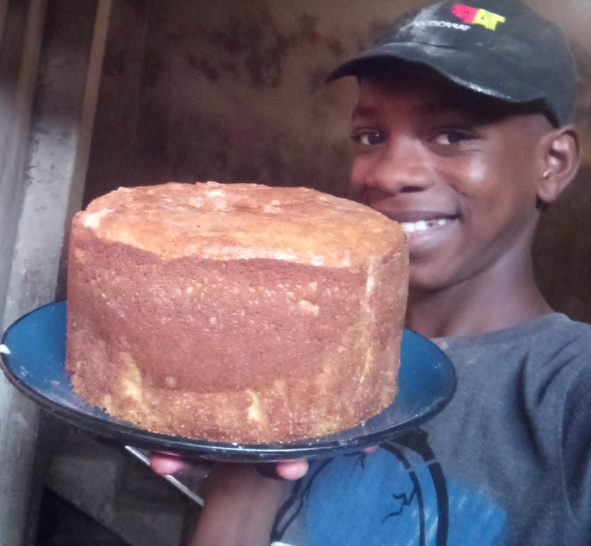

Seja Bem-Vindo
Receitas de Confeitarias
Detalhamos receitas para facilitar a vida de alguns confeiteiros.
Temos para si, as melhores receitas caseiras
Bolo de aniversário feito com carinho e muito amor, aqui em John sabores.
Temas

Para as receitas caseiras, reservamos 5 temas onde cada tema possui receitas diferentes para ser
aplicada em sua confeitaria.